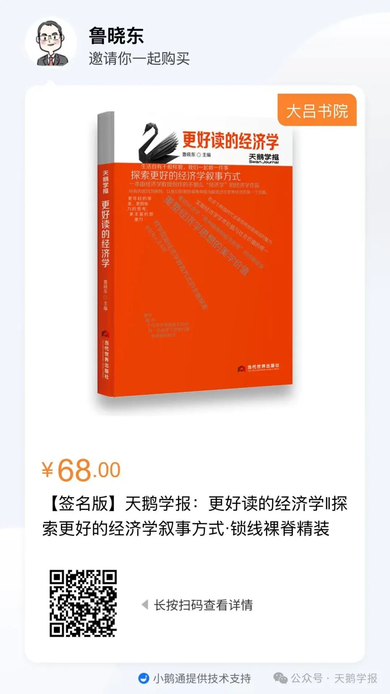
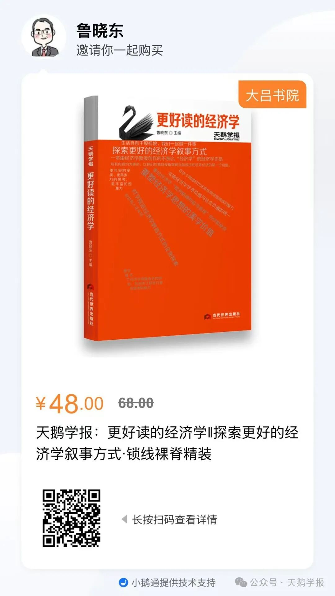
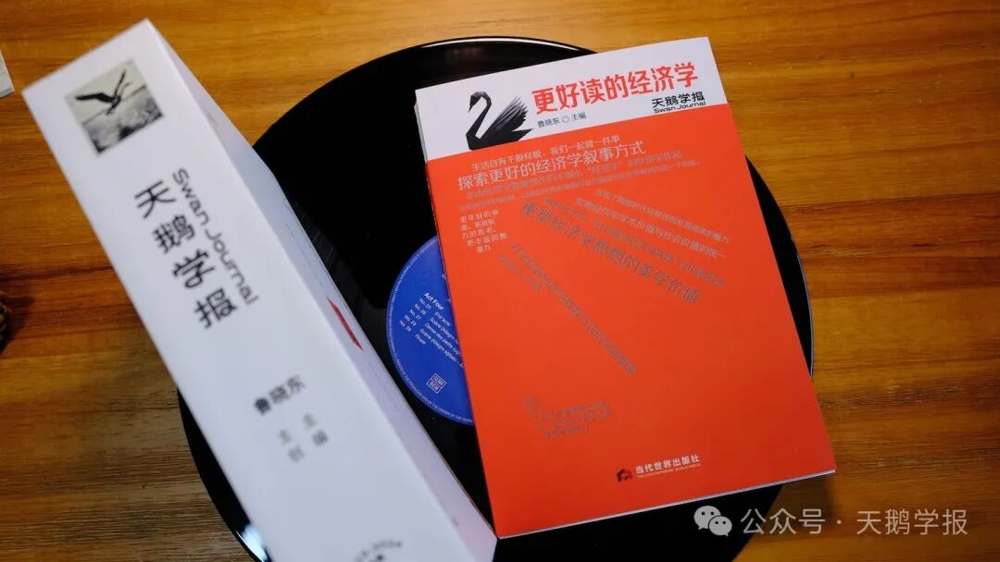
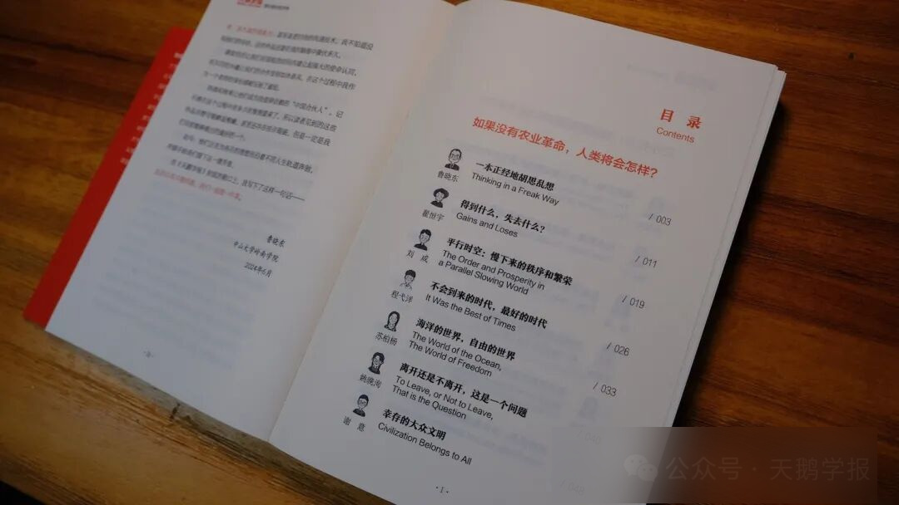
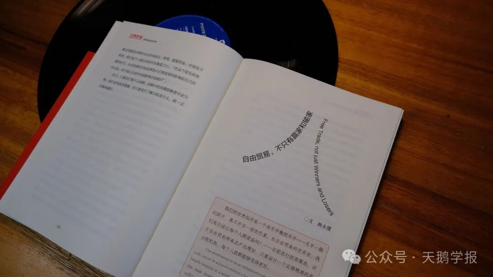
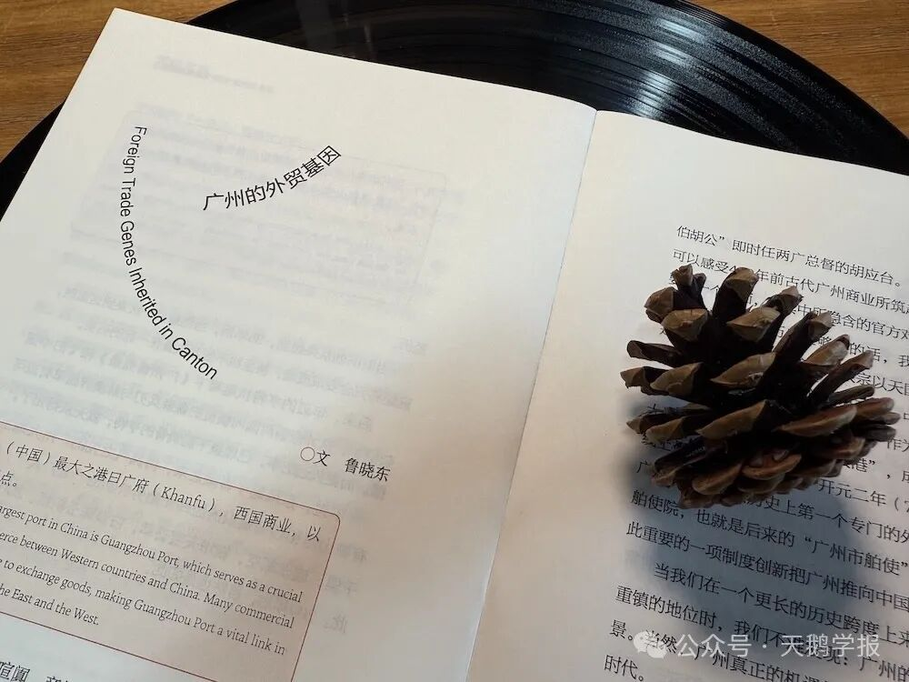

“苏格拉底做了一个梦，梦见一只天鹅雏鸟落到了他的腿上，然后它长出了翅膀，在甜美的叫声中飞走了。第二天，他遇见了后来成为他门生的柏拉图，苏格拉底坚信，他昨晚梦见的天鹅就是柏拉图。这位学子在多年以后成为人类思想的导师，他的智慧展翅高飞，流传千年……”
这个故事出现在犬儒学派哲学家第欧根尼·拉尔修(Diogenes Laertius) 《名哲言行录》的第五章，创作于公元前四世纪，是苏格拉底和柏拉图师徒智慧传承的诗意表达。
在经典中蛰居2400多年之后，它被赋予全新的意义，在我们的创作中复活，在纸页纷纷中翩然展翅。
天鹅之名便来自于此。

一、探索更好的经济学叙事方式
在这个流媒体充斥的时代，做一本纸质书似乎是与阅读的潮流逆向而行。2021年暑假，我在北京望京参加了一个由“做书”组织的小众书展，其中风格各异，形式丰富的出版物大大拓展了我对纸质书的认知。唯一遗憾的是，遍揽整个书展，找不到一本是以经济学作为主题的印刷品。在返回广州的飞机上，望着舷窗外的层层白云，我萌生了以经济学为主题做一本纸质出版物的最初想法。
作为一名经济学教授，我为什么要写一本看起来不那么“经济学”的“经济学作品”？主要原因或许来自于我对自己所从事的主流经济学研究的负面情绪。不管接受与否，经济学是当今社会科学中的“世之显学”。作为一门学科，它至少有200多年的历史，但是作为一种思想，它的火种则可以追溯到远古时代。
随着学科发展日臻成熟，研究技术也逐渐向数学归并，但为此付出的代价是它作为一种思想的美学意义被大大忽略了。1991年诺贝尔经济学奖得主罗纳德·科斯愤然道：“经济学科从人类创造财富的道德科学变为资源配置的冷酷逻辑，人性深度和丰富度的损失是最显著的代价。” 数学赋予了经济学准确表达的同时，也剥夺了后者进行复杂思考的能力，对量化研究“船货崇拜”式的伪装让经济学人们彻底迷失在技术的矩阵里。
但是经济学终究是研究人的科学，主流经济学这一套叙事语言也将它最应该争取的大众读者拒之门外，最聪明的经济学者把绝大部分智力都用来迎合审稿人各式反人类的偏好上，全然忘记了批判精神和追寻真理的终极使命。所以，当前经济学学科最大的问题并不在于它的发展前沿不够“前沿“，而是它与社会的沟通不足，日渐成为一个不为人所知，”自娱自乐”的智力游戏，这无疑与我走向经济学研究之路的初心严重背离。
是否存在更好的叙事方式呢？相对于数学语言，文字语言更加亲切，也充满了温度，但是也许会失去一些准确。在大体上正确和准确的错误之间，如果你也倾向于前者，那么建议翻开我们写作的这本书。
我们试图证明，脱离了数学语言，经济学也可以被清晰有效的表达。我们想做的，就是重塑经济学思想的美学价值。
因此也就有了《天鹅学报》封面上的这句话——探索更好的经济学叙事方式。

我们笃信，这样一种更易传播的表达方式有助于实现经济学学术价值与社会价值的统一，并在这个网络时代还原传统纸质阅读的魅力。
这注定是一条人迹罕至的小路，莫瑞尔·史多德在《风中的野花》（Wind- Wafted Flowers）中说：“我不会追随小路的方向，而是前往无人踏足之地，留下自己的足迹。”我们亦如此。
二、她的名字叫《天鹅学报》
尽管看起来有些相去甚远，但是这本书的原始形态大都来自于大学的经济学课堂。或者是课堂的讨论，或者是课程的作业，我们抛去了这些鲜活思想背后的技术过程，将它的肌理以一种更加亲切质朴的形式展示出来。
这种由师生共同完成一个题目的创作模式在我的认知范围里尚不多见。这本书的创作是由老师和同学们共同完成的，每一个篇章的创作思路是先由我基于课堂讲授的内容以及经济热点选择合适的主题，通过作业，或者定向邀约的形式，请同学们参与进来并进行定向创作。与此同时，我也基于同样的题目和要求进行研究写作。
这种独具创新意义的教学模式也是我对当前学院派经济学教育方式的一种反叛和再探索。在中国的经济学课堂里，充斥着各种基于过程的KPI评价方式，传统的如出勤率、及格率、考核大纲覆盖度等，基于大数据技术的上课前排就坐率、抬头率等指标。因为教育管理者对于专业知识的先天不足，教务部门对于教育的实际效果则鲜有问津。这本书的教学方式的创新价值在于它隐去了所有的学习过程，我只提供一个题目和写作要求，学生最终只需提交一篇优秀的作品即可。至于在此期间该如何查阅资料、布局谋篇，我只提供有限的指导，老师和学生、学生与学生的创作过程彼此独立，仅靠主题连接在一起，最大程度上地激发和锤炼了同学们的想象力、创造力和思考力。
为了能够找到一个可以完美呈现这一点的意象，本书的命名过程颇为周折。
最初确定的书名叫做泛舟者小报。这是另一个略显古老的故事，主角来自于19世纪英国文学的祭酒塞缪尔·约翰逊和他的忘年之交——现代传记文学之父鲍斯维尔(jamesboswell,1740-1795)。这一对年龄相差31岁的师徒兼好友，书写了英美文学的一段传奇。如果你对他们在泰晤士河上泛舟的故事细节心生好奇，欢迎来到中山大学《世界经济史》的课堂。
但是，我最终还是放弃这个标题。其中最主要的原因是它对于本书意旨的信息传达过于间接，两位文学大师对于经济学的世界而言也太过陌生。 沿着“师生联合”这个思路，我一度想使用的标题还包括风云小报、赫卡德莫斯公园、阿卡德莫斯(Academos)学园等等。
直到有一天，我脑海中浮现出开篇提到的《先哲言行录》里这个桥段，天鹅的意象与我的设计初衷完美契合，也让其他候选标题失去了印上封面的机会。
舍弃“小报”，而使用“学报”作为名字则是为了标识这个写作群体本身的学术特质，我们是一群已经或者正在接受正统经济学研究训练的大学师生。
天鹅与学报，这两个看似不相干的词汇，在我们的创作里实现了完美的结合。

三、长风漫卷的世界经济
在过去的20多年里，全球经济话题一直是我的兴趣所在，也是我的专业所长。本书的这些选题多来自我对世界经济的问题的长期思考，有些还在中山大学的课堂上讨论过。在课堂上他们是教学的手段，是引导学生思考的素材。进入书中，他们则变身为风干的彩蝶，就像诗人杨牧在《学院之树》中所写：“失去了干燥的彩衣，只有苏醒的灵魂/在书页里拥抱，紧靠着文字并且活在我们所追求的同情和智慧里”。我们期待这些带着温度的问题和文字能够启发更多的人，只要每多一个人读到，他们的价值就多了一分。
本书一共收录五个专题，所有内容均为原创，以我们的独特视角审视当前或过往世界经济的某一个切面。
第一期主题：如果没有农业革命，人类将会怎样？
这个问题我思考了近10年，在知乎上也发起过类似的讨论，迄今有两届本科生同学以此为课程作业，参与了这样看似荒诞的思想实验。本书收录的五篇作品来自两个年级的同学，他们的思考或冷峻、或乐观、或沉静，但是无不渗透着强大的理性和跳脱纸面的鲜明观点。

第二期主题：逆水行舟，自由贸易是好的经济学吗？
自由贸易是这个全球化时代最为宏大的命题之一，我对它的关注始于1999年《三联生活周刊》上一篇关于WTO部长级峰会在西雅图遭遇暴力抵制的评论文章。冥冥中似乎天注定，在兜兜转转多年以后，对这个问题的执着最终将我引向了职业经济学人的人生之路，并以研究国际贸易问题作为了毕生的事业。
在我所开设的《国际经济学》课程里，有三个关于自由贸易最为根本的问题： （1）如果一个国家在任何产品的制造上都有没有优势怎么办？ （2）个人的最优选择一定是国家的最优选择吗？ （3）自由贸易对于国家有益，对每个人也是如此吗？

在这些作品中，尽管同学们对于自由贸易的态度带有鲜明的学院派特色，但是每个同学的视角又不尽相同。
第三期主题：千年商都养成记
这是我《世界经济史》课堂上的一个“彩蛋”专题，在过去十年中只是偶尔讲授。这里的“千年商都“特指广州，起因就在于我们工作学习在这座城市。自先秦时期起至今，他的商贸故事讲述了两千多年，从古至今都是全球贸易版图中的重要枢纽城市。为了完成好这个专题，我带领作者们先后参观了十三行博物馆、黄埔古港、南海神庙等诸多具有鲜明商业特征的历史遗存，试图最大限度地还原广州城在不同时代的商贸业态。最终收录的文章即涉及到广州古港的历史变迁，也有广州行商群体的唏嘘命运，既有广州泉州的跨时空对比，也有番鬼笔下晚清广州市井生活的诗意抒发。

第四期主题：世界经济史上的19XX年
这个选题来自于《世界经济史》课堂上关于20世纪经济问题的分析。20世纪是经济史上离我们最近的⼀个世纪，当前全球经济的最新变化都是上⼀个百年⻓期孕育的结果。20世纪经济也是经济史发⽣了诸多巨变的⼀个世纪，⼈⼝、科技、资源、制度等等发展的要素都曾经历深刻的变⾰。如果说历史是⼀⾯镜⼦，那么20世纪的历史则是最清晰的那⼀个。在这一章的构思中，我使用一种可以称为“节点思考法“的“治史”⽅法，尽管历史都是连续的，但是仍然有些年份在经济史发挥着超乎寻常的作用，20世纪的很多年份均具有这样的节点意义。当时给参与写作的同学们提的具体要求是” 以“世界经济史上的19xx年”为标题，挑选⼀个你认为最具代表性的⼀个年份，深刻阐述这⼀年在全球经济史上的⾮凡意义。”
经过认真的遴选，在这个”百年“大名单里，1901、1913、1333、1952、1973和1999最终得以进入本书，为漫长的20世纪经济代言。
第五期主题：贸易中的贸易
不得不承认，在所有候选题目中，这一期的主题这是我最想讲述，也自以为最具创意，但是现在依然讲不好的一个主题。它构思过程之长甚至超过了本书的写作周期，先后启用了两拨作者，废弃的稿件要远超读者最终能够见到这六篇作品。全球贸易人人耳熟能详，它在我们的日常认知里，无非就集装箱、远洋货轮、信用证、跨境电商等等，但是“你所见的并非你所见”，商品在成为贸易品之前，要经历一个漫长的生产过程。它的设计需要想象力；它的加工过程需要使用能源并排放二氧化碳等温室气体；在这个数字化时代，供求信息的交换背后伴随大量的比特流；全球生产网络意味着并非所有的出口都来自本国的贡献，那么生产链条上的“一国增加值”是多少也会成为一个问题。贸易建立了一个秘密通道，经由这个通道，碳元素、数字、想象力、增加值、能源实现了全球的移形换位。它们并非像汽车、石油那样显而易见，但是确也纠缠其中，我们称之为贸易中的贸易。
对于日新月异的世界经济而言，五篇专题所能呈现的内容的确有限，这种“专题式”的编排模式意味着这本《天鹅学报——更好读的经济学》将会是一个系列作品。随后读者可能还会看到的话题有：人工智能与商业应用、全球化之殇、比较优势200年、经济史上的“人”与”口“……
世界经济日日新，又日新，长风漫卷，永远有讲不完的故事，讨论不完的话题，为我们的思考提供了最丰富的背景和源源不断的素材。
四、我们一起做一件事
这是一部中山大学师生的联合作品。
本书共收录作品30篇，除了我本人作为教师写作的6篇以外，其他均来自中山大学岭南学院我的学生们。我们在课堂上相遇，除了共同完成一门课的教与学，还在共同的志趣中再度联手。
“但总有人正年轻”，他们是《天鹅学报》不可或缺的另一半。
在这些最终得以呈现在读者面前的文章背后还有为数众多的课程习作，入选作品是优中选优的结果。24篇学生作品，文笔风格各异，观察视角各异，但是他们有一个共同的特点，都曾经在某一点上打动了我，抓住了这次变为铅字的机会，我期待她们去打动更多的人。
幸运的是，《天鹅学报》在酝酿时期就有了一个相对稳定的创作团队，他们共同的身份就是我的学生，可能是由于某种不可名状的力量存在，在写作阶段就自然而然地成为了我的“盟友”，欣然加入了这一场发生在中山大学的思想和写作试验。他们为《天鹅学报》带来了更年轻的审美、更具张力的思考、更丰富的想象力、甚至是更时尚的沟通技术。我不知道没有他们的存在，这件作品还要在我的脑海中再蛰伏多久。
课堂经历让我们在很短的时间内建立起来强大的使命认同，而共同的兴趣让我们的合作变得如沐春风，在这个过程中我作为一个老师的身份感被压到了最低。
热情和效率让他们成为我值得信赖的“中国合伙人”。记不清在这个过程中有多少次推到重来了，所以读者见到的这些作品尽管可能略显稚嫩，甚至还存在些许瑕疵，但是一定是我们目前能够做出的最好的一个。
如今，他们正在为各自的理想而朝着不同人生轨道奔驰，并顺手给我们留下这一缕芳香。
在《天鹅学报》的封面上，我写下了这样一句话——生活自有千般样貌，我们一起做一件事。
鲁晓东
2024年6月于中山大学岭南学院